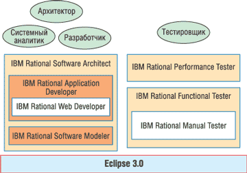

Андрей Колесов
В исторической перспективе вклад корпорации IBM (http://www.ibm.com) в развитие средств разработки ПО ни у кого не вызывает сомнений. Однако в 90-х годах прошлого столетия это направление ушло в тень других, более важных сфер деятельности компании: IBM практически не упоминалась в списках лидеров в разработке средств программирования, о ее достижениях в этой области говорилось чаще всего в прошедшем времени. IBM имела собственные инструменты разработки, но им отводилась лишь вспомогательная роль по отношению к ее софтверным "китам" (WebSphere, DB2, Tivoli и Lotus). Однако ситуация резко поменялась два с половиной года назад, когда IBM приобрела одного из лидеров сегмента инструментальных средств - компанию Rational Software.
Возможно, кому-то решение IBM показалось неожиданным, но на самом деле это был вполне естественный поворот событий. Причина его - общее усиление внимания корпорации к софтверной составляющей своего бизнеса, важная роль которой стала еще более очевидной в период кризиса мировой ИТ-отрасли в начале столетия. Следствием кризиса стало и растущее значение средств разработки в деле продвижения платформенного ПО, и в этой ситуации "Голубой гигант" не мог довольствоваться позицией стороннего наблюдателя за процессом активизации других поставщиков инструментария - как Microsoft, так и друзей-соперников из Java-сообщества.
Более того, довольно скоро стало понятно, что продуктам Rational отводится особое место в семействе ПО IBM (рис. 1): если четыре другие его компонента представляли вертикальные, непересекающиеся направления, то средства разработки должны были стать горизонтальной составляющей, которая взяла бы на себя существенную роль в деле общей интеграции программных продуктов IBM. Все это вполне соответствует реализации стратегии IBM "бизнес по требованию" (business on demand), которая подразумевает предоставление заказчикам, помимо операционных сред и прикладных решений, и полного комплекта средств разработки*.
* По мнению представителей IBM, приобретение Rational дало пример самой успешной интеграции приобретенной компании в основной бизнес корпорации за всю ее историю. Интеграция проходила в несколько этапов и в нескольких направлениях. В первую очередь она подразумевала создание единых групп продаж, технической поддержки, маркетинга и т. д. Затем шло объединение и оптимизация деловых процессов, управления бизнесом. И наконец, это была интеграция технологий.
| WebSphere Платформа для создания прикладных систем |
DB2 Система управления базами данных и хранения информации |
Lotus Управление документами, коммуникации, поддержка совместной работы |
Tivoli Управление ИТ-инфрастуктурой масштаба предприятия |
| Software Development Platform (Rational) Средства разработки и поддержки ПО на протяжении всего жизненного цикла приложений | |||
| Рис. 1. Структура системы программных продуктов корпорации IBM. | |||
Смысл приобретения Rational стал окончательно ясен, когда в начале 2004 г. IBM объявила о намерении сформировать единый комплекс Software Development Platform (SDP)**, который должен объединить инструментальные средства всех брэндов IBM Software Group - Rational, WebSphere, Tivoli, DB2 и Lotus. В качестве базовой технологии платформы была выбрана Eclipse 3.0, представляющая собой платформно-независимую среду разработки и программный каркас для решения задач всего цикла разработки ПО, за методологическую основу принят Rational Unified Process.
** Хотя в качестве синонима SDP и сегодня часто используется термин Rational, нужно отметить, что это не совсем правильно. Появление нового названия для комплекса инструментов должно как раз подчеркнуть его "горизонтальную" суть - единая платформа для всех прикладных направлений.
Первые конкретные шаги в направлении реализации концепции SDP были сделаны в октябре 2004 г., когда IBM представила первые продукты своего проекта Atlantic, более четко обозначив технологические и маркетинговые контуры создаваемой инструментальной платформы.
Необходимо отметить, что Rational к моменту слияния с IBM уже имела достаточно полный и самодостаточный комплекс средств разработки, у нее был свой план его развития, который уже начал осуществляться, в частности, в виде семейства XDE. Однако вхождение в IBM, уже имевшую собственные наборы инструментов, внесло коррективы в ранее выработанную стратегию Rational - вместо модернизации продуктов XDE корпорация запустила новый проект Atlantic. IBM объясняет это тем, что нужно было не просто развивать средства Rational, а создать платформу, которая объединила бы все инструменты IBM, разбросанные по разным брэндам. За основу были приняты решения и методология Rational, поскольку только они в максимальной степени охватывали весь жизненный цикл приложений.
Задача состояла в том, чтобы предложить заказчикам нечто цельное, последовательное, непротиворечивое. Поэтому на первом этапе IBM приступила к интеграции инструментов Rational во все остальное свое ПО, которое, как известно, в большинстве своем относится к категории middleware - ПО промежуточного уровня. При этом использовались средства разработки или отдельные компоненты брэндов. Второй этап - собственно создание единой платформы Software Development Platform, в формировании которой ключевая роль отводится проекту Atlantic. При этом процесс формирования SDP будет идти эволюционно: все инструментальные средства, имевшиеся у IBM, по-прежнему остаются в каталоге продуктов корпорации, обеспечивается их техническая поддержка, и большинство из них будет развиваться в будущем.
Отметим, что, формируя свою инструментальную платформу, IBM продолжает привлекать внешние ресурсы. Так, в конце 2004 г. корпорация объявила о приобретении канадской компании Systemcorp ALG, занимающей ведущие позиции в области программных решений категории PPM (Project Portfolio Management - управление портфелем проектов). Ее Web-ориентированное решение PMOfficeTM предполагает автоматизацию всех аспектов проектов, включая управление бюджетами, заданиями и рисками.
Пути IBM и Microsoft расходятсяВхождение компании Rational в состав IBM, помимо проблемы интеграции ее продуктов в общий комплекс ПО IBM, сразу поставило еще один важный вопрос: сохранит ли Rational традиционную ориентацию на поддержку различных платформ разработки, в том числе Visual Studio? Ведь до этого Microsoft и Rational скорее были стратегическими партнерами: их продукты, пересекаясь в отдельных позициях, дополняли друг друга. Rational изначально ориентировалась на выпуск комплексных решений класса ALM (Application Lifecycle Management) корпоративного уровня. В ее арсенале продуктов фактически не было представлено только одно "инструментальное" направление - обычные средства собственно написания кода с соответствующими компиляторами и библиотеками объектов, которые, в свою очередь, составляли основу средств программирования Microsoft. Ответ на поставленный вопрос, казалось бы, должен быть очевидно положительным: во-первых, платформная независимость - один из ключевых принципов софтверной стратегии IBM, во-вторых, игнорировать огромную долю рынка, занимаемую .NET, было бы весьма неразумно. Тем более что смещение интересов сообщества .NET-разработчиков в сторону корпоративных заказчиков должно вызвать повышение спроса на инструменты Rational. Однако последующее развитие событий показало, что, несмотря на заявления представителей двух компаний о намерении продолжать сотрудничество, пути Microsoft и IBM Rational все больше расходятся. За последние полтора года все основные новые объявления IBM связаны с появлением средств Java-разработки. Microsoft, в свою очередь, форсировала усиление следующей версии Visual Studio 2005 собственным набором ALM-средств - Team System, включающим инструменты проектирования, моделирования, отладки и тестирования. Различие в подходах двух компаний отразилось в представленных ими в 2004 г. новых инструментах моделирования, имеющих кодовые названия Whitehorse (Microsoft) и Аtlantic (IBM). В составе Whitehorse имеется достаточно полный набор средств для проектирования распределенных приложений, моделирования логической инфраструктуры и автоматической генерации кода. Однако примечательно, что в нем используется не классический UML, а собственная нотификация языка Microsoft. По мнению корпорации, нововведения должны упростить освоение методов визуального проектирования приложений для программистов, не имеющих соответствующего опыта. Инструменты же Atlantic, развивая достижения Rational в области моделирования, полностью поддерживают стандарт UML 2.0, обеспечивая совместимость и интеграцию с продуктами не только IBM, но и других поставщиков. Вместе с тем IBM Software Group продолжает оставаться одним из наиболее активных участников программы Visual Studio Integration Partner. Корпорация обещает и далее обеспечивать поддержку .NET в различных своих продуктах. |
Первый шаг - Atlantic
На сегодняшний день собственно SDP включает серию продуктов, представленных в конце прошлого года в качестве первых результатов проекта Atlantic. Два из них - усовершенствованные версии инструментов WebSphere Studio Site Developer и WebSphere Studio Application Developer, которые теперь переименованы соответственно в IBM Rational Web Developer for WebSphere Software и IBM Rational Application Developer for WebSphere Software. Кроме смены имени, в них также появились новые возможности упрощения и ускорения разработки на базе Java за счет автоматизации различных задач разработки и сокращения объема ручного кодирования. Этот набор инструментов включает средства для анализа программного кода, тестирования производительности, разработки порталов и визуального редактирования моделей на языке UML 2.0. Хотя эти решения оптимизированы для разработок на базе WebSphere, они могут применяться и при разработке ПО для других платформ, в том числе BEA WebLogic.
В рамках же реализации собственно проекта Atlantic представлены четыре новых продукта, коротко охарактеризованные ниже.
IBM Rational Portfolio Manager - решение для всего жизненного цикла, предназначенное для формирования приоритетов, планирования, управления и оценки ИТ-проекта с использованием методов управления ИТ-ресурсами как бизнесом.
IBM Rational Software Architect - инструмент проектирования и разработки, позволяющий определять и сопровождать все архитектурные аспекты прикладного ПО. Он обеспечивает разработку приложений на языках C/C++, в том числе с использованием компонентов Eclipse. Этот инструмент должен повысить качество ПО за счет проверки архитектуры приложения на соответствие проектным требованиям, устойчивость и возможность внесения изменений.
IBM Rational Software Modeler - средство визуального моделирования и проектирования на базе языка UML 2.0, позволяющее организовать документирование и обмен информацией между различными представлениями разрабатываемой системы. С его помощью архитекторы, системные аналитики и проектировщики смогут обеспечить тщательную проработку спецификаций, архитектуры и проекта, а также последующее доведение этой информации до всех участников процесса разработки. В этом инструменте используются самые последние версии Eclipse и UML, что, к примеру, позволяет реализовать такое качественное новшество, как поддержка трансформации моделей.
IBM Rational Manual Tester - средство ручного тестирования, предназначенное для бизнес-аналитиков и тестировщиков. Применяемые в нем технологии направлены на то, чтобы снизить влияние вносимых изменений при создании и применении ручных тестов.
Одновременно был представлен еще ряд обновленных продуктов для разработчиков ПО - усовершенствованные средства тестирования функциональности и производительности (IBM Rational Functional Tester и IBM Rational Performance Tester) и улучшенные инструменты для управления конфигурациями ПО (SCM-решения), включая IBM Rational ClearCase и IBM Rational ClearQuest.
Все новые инструменты построены на базе Eclipse 3.0, их местоположение в общей системе и взаимосвязи иллюстрирует рис. 2.
|  |
| Рис. 2. Набор инструментальных средств IBM Rational, представленных в рамках проекта Atlantic.
|
Хотя в состав платформы IBM Software Development Platform входит полный набор решений для разработки ПО, ее модульная структура позволяет команде разработчиков использовать только те инструменты, которые необходимы для конкретного проекта. Указанные решения, дифференцированные по функциональным ролям участников разработки, позволяют каждому члену команды "видеть" весь массив используемых в проекте данных, визуально представленных именно так, как необходимо ему для выполнения своих обязанностей.
Архитектурные и технологические основы SDP
Одна из ключевых концептуальных идей, заложенных в архитектуру SDP, - бизнес-ориентированный модельный подход к разработке ПО (Model Driven Development, MDD) в ходе всего жизненного цикла программных продуктов. Это, в свою очередь, подразумевает более широкое использование ролевой модели и возможность интеграции различных средств и технологий (рис. 3).
| Бизнес-архитектор Моделирование бизнес-процессов и информационных потоков |
Архитектор ИТ Разработка логики приложений, моделирование данных и создание паттернов |
Разработчик Традиционные средства разработки корпоративных систем – J2EE, DB2, Microsoft .NET и т. п. |
Специалист по тестированию Функциональное и нагрузочное тестирование |
| Платформа Eclipse, модели EMF (UML, J2EE, Web-сервисы…) Интеграция с IBM Team Rational Unifying Platform | |||
| IBM Team Rational Unifying Platform Унифицированная платформа коллективной работы: управление требованиями, изменениями, конфигурациями, а также методология разработки IBM Rational Unified Process Интеграция с WebSphere, Tivoli, DB2 и Lotus | |||
| Рис. 3. Направления интеграции средств разработки IBM. | |||
В основе SDP лежит технологическая инфраструктура, базирующаяся на открытых стандартах, среди которых нужно в первую очередь выделить Java, платформно-независимую инструментальную платформу Eclipse 3.0, среду визуального моделирования Eclipse Modeling Framework (EMF) с использованием новой версии языка моделирования UML 2.0 и модель программирования, реализующую сервис-ориентированную архитектуру.
Eclipse представляет собой проект open source, цель которого - создание высокоинтегрированной инструментальной платформы (подобнее см. врезку "Проект Eclipse объединил Java-разработчиков"), обеспечивающей набор базовых функций и расширяемой за счет поддержки архитектуры подключаемых модулей (plug-ins).
Платформа Eclipse выполняет в IBM SDP три основные функции:
- предоставляет набор сервисов для единого графического интерфейса пользователя, что обеспечивает высокий уровень целостности в рамках выполнения различных действий в рамках SDP;
- поддерживает улучшенный механизм использования одних и тех же информационных массивов;
- предоставляет инфраструктуру для коллективной работы.
Кроме собственно функциональных новшеств, следует обратить внимание на один принципиально важный момент. До настоящего времени при реализации сложных проектов разработчики часто пользовались несколькими инструментами (моделирование, кодирование, тестирование и т. п.), которые взаимодействовали друг с другом на уровне различных программных интерфейсов API. Применение Eclipse обеспечивает интеграцию разных средств на уровне метаданных среды EMF и единого пользовательского интерфейса. Разработчик, используя различные функции поддержки жизненного цикла приложений, остается при этом в одной и той же среде.
Среда моделирования EMF обеспечивает генерацию кода на основе моделей UML, схем XML или интерфейсов Java. Например, при создании приложения, которое будет манипулировать структурой сообщений XML, можно определить схему XM, а затем при помощи EMF сгенерировать диаграмму классов UML для этой схемы и набор Java-классов для обработки XML-сообщения. Аналогичным образом можно на основе Java-кода, описывающего ключевые интерфейсы в программном проекте, при помощи EMF сгенерировать соответствующие UML-модель и структуру XML-сообщений.
Модели, описываемые в EMF, представлены в виде внутренней модели, именуемой Econe. По сути дела EMF представляет собой одну из реализаций Meta Object Facility (MOF) - стандарта описания хранилищ метаданных, разработанных Object Management Group. MOF определяет подмножество операторов UML для описания понятий моделирования классов внутри хранилища объектов. Соответственно MOF походит на Econe возможностью описания структурных и поведенческих характеристик классов, наследования, пакетов и способов отображения (reflection). Отличие между MOF и Econe состоит в том, что MOF обладает дополнительными комплексными функциями управления жизненным циклом, структурами данных, связями между пакетами и сложными ассоциативными типами.
Опираясь на платформу Eclipse, в процессе интеграции инструментов можно выделить следующие этапы.
- С помощью EMF разрабатываются метамодели, учитывающие специфику разных инструментов. Если это возможно, они строятся на базе стандартных метамоделей, применяемых в отрасли (например, UML); при необходимости метамодели расширяются и модифицируются.
- Большинство компонентов инфраструктуры, обеспечивающей интеграцию средств разработки, генерируются на основе моделей EMF. По мере эволюции инструментальных средств и механизма их интеграции эти компоненты можно сгенерировать заново.
- Проводится уточнение и обеспечивается совместный доступ к общей семантике метаданных (описываемых с помощью таких языков, как UML, XSD, XML, Annotated Java и т. д.).
- Все взаимодействия между инструментальными средствами происходят через общий программный интерфейс (Java).
- Для обмена метаданными между инструментальными средствами внутри системы, а также для внешнего взаимодействия с инструментальными средствами, разработанными партнерами, применяется единый подход (XML).
- На основе моделей генерируются простые функции реализации (операции CRUD, базовые функции редактирования и т. п.).
- Для внутренних преобразований применяются метамодели для J2EE, Web Services и MDD.
Еще один важный компонент Eclipse - Hyades Testing Framework, новая технология интеграции средств тестирования. Она обеспечивает синхронизацию всех этапов тестирования на протяжении всего жизненного цикла ПО, стимулируя опережающее тестирование (test-first). Тут нужно отметить, что ее могут использовать не только поставщики инструментов, как это уже - первой в отрасли - стала делать IBM, но и независимые разработчики и заказчики.
В итоге инфраструктура IBM SDP состоит из трех основных компонентов (рис. 4). Основа инфраструктуры - группа технологий open source, реализуемых в рамках проекта Eclipse (к ним относятся ядро Eclipse, различные подключаемые модули и группа метаданных, описанных в EMF). Второй компонент - предлагаемые IBM дополнительные возможности, реализованные на базе Eclipse. И третий - платформа коллективной работы, включающая базовые технологии IBM для организации совместного доступа к данным, управления артефактами и сбора информации.
| Рис. 4. Компоненты технической инфраструктуры IBM Software Development Platform.
|
В свою очередь, в число ключевых элементов модели программирования, общих для SDP и другого ПО промежуточного слоя IBM, входят такие технологии, как Service Data Objects (упрощенная модель программного доступа к данным для различных ресурсов), BPEL4WS (язык исполнения бизнес-процессов), JavaServer Faces (специальный инструмент для создания Web-приложений новичками в Java-программировании), а также средства адаптации приложений с использованием внешних политик и правил (в частности, это стандарты Web Services Policy и Business Semantics of Business Rules).
Заключение
Вполне очевидно, что реализация проекта Atlantic - это хотя и важный, но лишь первый шаг в направлении создания полноценной интегрированной платформы разработки IBM. Для оценки новшеств и достоинств представленных продуктов потребуется некоторое время, тем более что в арсенале Rational уже были и есть инструменты, ориентированные на решение подобных задач. Однако в любом случае нужно отметить, что в новых решениях видна четкая линия IBM на перевод своего инструментария на платформу Eclipse и использование подхода так называемой ориентированной на бизнес разработки. В то же время очевидно, что традиционная ориентация Rational на многоплатформность сегодня все чаще нуждается в уточнении - "в рамках Java". Впрочем, IBM подчеркивает, что ее подразделение Rational продолжит совершенствование и поддержку других средств моделирования - IBM Rational Rose и IBM Rational XDE.
Проект Eclipse объединил Java-разработчиковПри всех достоинствах концепции Java у нее до недавнего времени был один существенный изъян. Дело в том, что Sun Microsystems в свое время сделала основной акцент на модель исполнения Java-приложений, обойдя вниманием вопросы разработки ПО. В результате на рынке появился довольно широкий спектр непохожих друг на друга Java-инструментов различных поставщиков. Такая "разношерстность" объективно препятствовала процессу консолидации Java-сообщества и явно ослабляла фронт Java-средств перед лицом монолита Microsoft Visual Studio .NET. Именно на решение этих задач был нацелен инициированный семь лет назад корпорацией IBM проект Eclipse, который получил мощную поддержку ИТ-отрасли и сегодня представляет собой важнейшую ветвь развития технологий построения информационных систем корпоративного уровня. Проект Eclipse был начат корпорацией IBM в 1998 г. с целью создания интегрированной среды Java-разработки нового поколения. Однако вскоре руководству компании стало понятно, что для построения конкурентоспособного решения нужно действовать в кооперации с другими поставщиками Java-инструментов. В результате в ноябре 2001 г. был сформирован первый совет управляющих проектом Eclipse.org, в состав которого вошли представители компаний Borland, IBM, MERANT, QNX Software Systems, Rational Software, Red Hat, SuSE, TogetherSoft и Webgain. В последующие два года к этой работе подключились многие другие ведущие ИТ-поставщики, в том числе Sybase, Fujitsu, Hitachi, Oracle, SAP и Intel. В начале 2004 г. IBM сделала окончательный шаг по преобразованию проекта Eclipse из частного в отраслевой, представив Eclipse Platform в виде ПО с открытыми исходными кодами. Соответственно в феврале того же года совет управляющих был преобразован в некоммерческую организацию Eclipse Foundation (http://www.eclipse.org), открытую для всех желающих. Это позволило привлечь к работам самый широкий круг заинтересованных сторон: основных технологических вендоров, заказчиков, университеты и научно-исследовательские институты, органы стандартизации, индивидуальных ученых и программистов. Таким образом, уже более года Eclipse развивается как независимый открытый проект, хотя IBM безусловно занимает в нем положение "первой среди равных". Стратегические вопросы работы фонда решаются советом директоров Eclipse Board, среди которых есть четыре категории участников: стратегические разработчики (Strategic Developers), стратегические потребители (Strategic Consumers), поставщики расширений (Add-in Providers) и руководители проектов open source. В состав основателей фонда, имеющих статус стратегических разработчиков и потребителей, в феврале 2004 г. вошли компании Ericsson, HP, IBM, Intel, MontaVista Software, QNX, SAP и Serena Software. В начале марта 2005 г. в Берлингейме (США) прошла конференция EclipseCon'2005, обозначившая дальнейшие перспективы развития этого направления. Тогда же членами фонда со статусом Strategic Developer стали компании BEA Systems, Borland Software, Computer Associates, Sybase и Wind River Systems. Оперативным управлением работой Eclipse Foundation занимаются три совета - по требованиям, архитектуре и планированию, а сами разработки ведутся в виде проектов Eclipse Open Source. В настоящее время при поддержке более пятидесяти компаний - членов организации выполняются шесть основных проектов (под руководством соответствующих комитетов). Eclipse. Это первый и самый главный проект фонда, в рамках которого создается собственно открытая индустриальная платформа для разработки интегрированных инструментов и функционально насыщенных клиентских приложений. Eclipse Tools. Цель этого проекта - координация разработок в области инструментов для Eclipse Platform. Здесь решаются вопросы сведения к минимуму дублирования работ, создания и использования общих компонентов, обеспечения совместимости продуктов. Eclipse Tools Project играет важную роль с точки зрения практической оценки создаваемой платформы и определения путей ее развития. Eclipse Technology. Миссия данного направления - обеспечить участие в работе фонда широкого круга разработчиков, ученых, преподавателей и студентов, поддерживая проведение исследований, обучение и инновационные проекты. Eclipse Web Tools Platform. Цель проекта - разработка общей инструментальной платформы для создания специализированных J2EE- и Web-ориентированных решений. В частности, одна из его задач - демонстрация возможностей базовой платформы. Eclipse Test & Performance Tools Platform. Проект предполагает формирование интегрированного набора технологий для создания инструментов, позволяющих проводить полный цикл тестирования ПО. Здесь создаются эталонные варианты инструментов, используемые в том числе и для разработки базовой платформы Eclipse. Business Intelligence & Reporting Tools. Создаваемые в ходе проекта инструменты адресованы широкому кругу Java-разработчиков для решения задач бизнес-аналитики и управления отчетами. За семь лет существования проекта Eclipse было выпущено три версии базовой платформы, а сама концепция переросла первоначальные рамки. Сегодня речь уже идет о построении многофункциональной технологической платформы, на которой различные вендоры могли бы создать широкий спектр инструментов, охватывающий полный жизненный цикл разработки ПО, включая поддержку моделирования, развитие программных сред для Java, C/C++ и других языков, тестирование, развертывание и эксплуатацию. Более того, выпущенная год назад версия Eclipse 3.0 обозначила выход проекта за пределы собственно разработки ПО и положила начало применению платформы для решения более широкого круга задач - поддержки ИТ-ресурсов предприятия, создания приложений для функционально насыщенного клиента и различных встроенных разработок. Eclipse позволяет создавать многоязычные, многоплатформенные, мультивендорные инструментальные решения. Уже сейчас это ПО совместимо с широким кругом клиентских ОС, включая Linux, HP-UX, AIX, Solaris, QNX, OSx и Windows. В то же время изначальная особенность проекта - ориентация на архитектуру Java (Eclipse Platform написана на этом языке). Проект Eclipse не предполагает разработку коммерческих продуктов для пользователей (тех же средств разработки ПО). Цель проекта - создание технологической платформы для интеграции различных инструментов, на базе которой компании - как поставщики, так и пользователи ИТ - могут создавать собственные решения. Именно поэтому в качестве ключевого принципа реализации Eclipse выбрана модель open source. Помимо чисто технологических аспектов, это подчеркивает идейное и организационное родство Eclipse с другим архитектурным направлением современных ИТ - ОС Linux (и с такими разработками, как Apache и MySQL). Использование кода Eclipse Platform регулируется моделью Common Public License, которая в последующем позволит распространять его на некоммерческой основе. Фактически проект Eclipse сегодня перерос свои технологические рамки: он затрагивает вопросы бизнеса участников ИТ-рынка (вендоров и заказчиков), и поэтому применительно к нему нередко используется термин "экосистема". За последние пару лет проект Eclipse превратился в один из решающих факторов развития рынка средств разработки. До недавнего времени продвижение Eclipse на рынок коммерческих инструментов шло в основном за счет усилий IBM, которая сделала эту технологию базовой для своих продуктов для разработчиков и пользователей - Software Development Platform и Workplace. Однако к этой деятельности (в качестве стратегических разработчиков проекта Eclipse) подключился еще ряд ведущих поставщиков, и теперь они могут существенно расширить сферу применения Eclipse. В частности, Borland будет использовать данную технологию в своей платформе управления жизненным циклом разработки, Computer Associates - в продуктах для управления ИТ-ресурсами, BEA Systems - в средствах разработки и интеграции приложений. На EclipseCon'2005 был представлен план развития технологий Eclipse, который включает работы по следующим направлениям (рис. 5).
Расширение спектра решений для управления жизненным циклом разработки ПО. Речь идет, в частности, о новых проектах, связанных с управлением требованиями, моделированием, управлением данными, развертыванием ПО и администрированием систем. Кроме того, базовый каркас Eclipse будет адаптирован к таким технологиям, как Web-сервисы и сервис-ориентированная архитектура SOA. Расширится и поддержка различных языков программирования. Улучшение возможностей Rich Client Platform (RCP) - технологии создания и управления приложениями с насыщенным пользовательским функционалом. RCP впервые появилась в рамках Eclipse Platform 3.0 в июне 2004 г. В марте нынешнего года была обнародована RCP 3.1, которая включает улучшенные средства управления сценариями, более мощную графику и эффективное управление таблицами. Развитие этой платформы будет связано с повышением безопасности, расширением спектра поддерживаемых ОС и клиентских устройств, более гибким управлением обновлениями и самой интегрированной средой. Применение для встроенных решений. Это новое направление применения Eclipse для одного из самых динамично развивающихся сегментов ИТ-рынка. Многоязычная поддержка. До настоящего времени Eclipse ориентировалась на работу с Java и С/С++. Теперь ставится задача адаптировать инструментальную среду для работы с более широким спектром языков программирования, как компилируемых, так и скриптовых. Технологии для вертикальных рынков - возможность использования Eclipse для создания специализированных прикладных решений. Говоря об успехе Eclipse, эксперты называют целый ряд причин - в том числе такие, как принципы open source, удачная схема управления проектом, эффективная модель обновления версий (Agile development, с выдачей обновлений через каждые шесть недель), нейтральность по отношению к вендорам, платформам и языкам программирования. Однако есть еще один, главный фактор - противоборство с Microsoft Visual Studio. Не вызывает сомнений, что само появление проекта Eclipse и последующая консолидация вокруг него Java/Linux-поставщиков объясняется растущим влиянием платформы .NET.
|